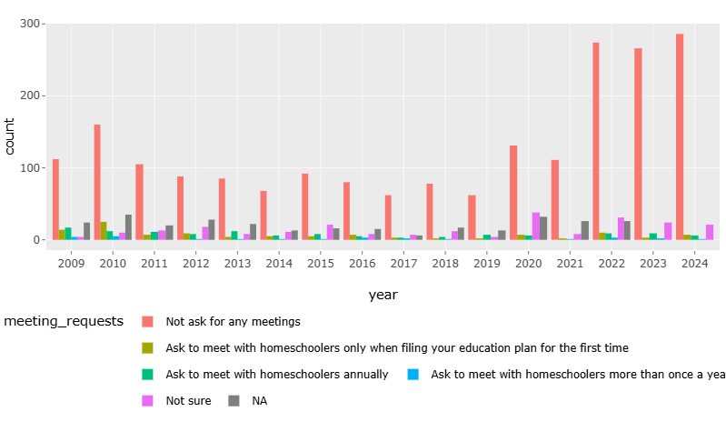
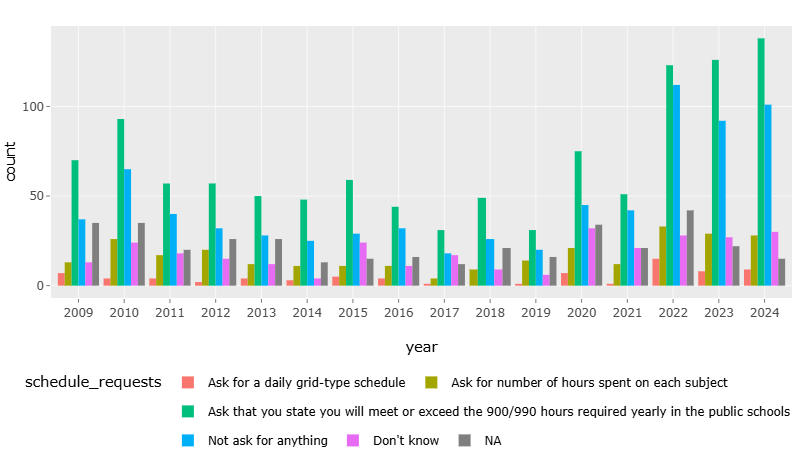
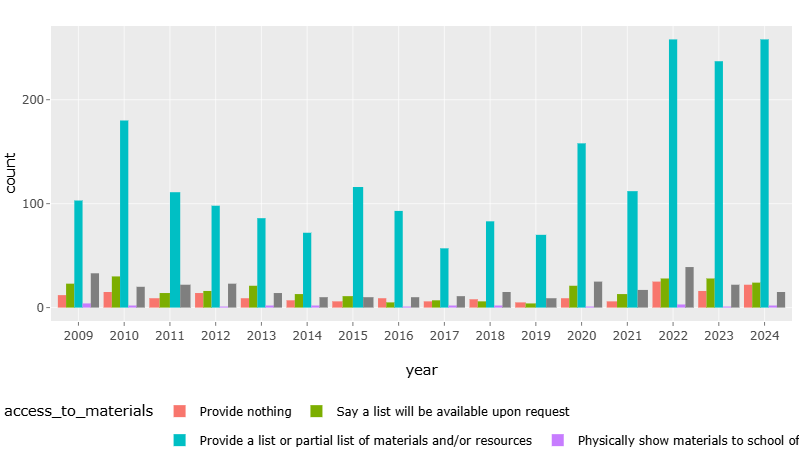
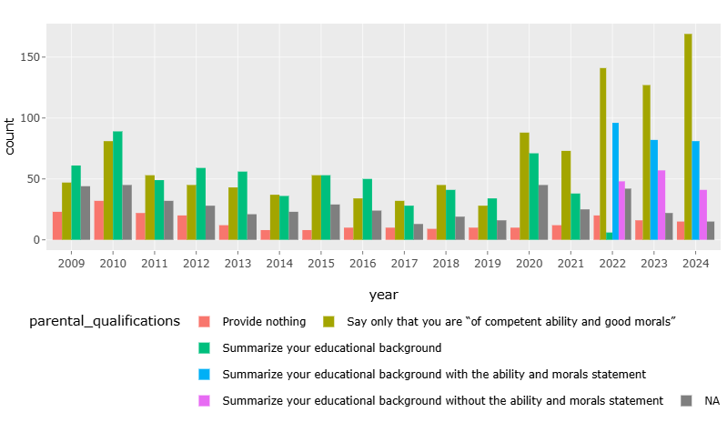
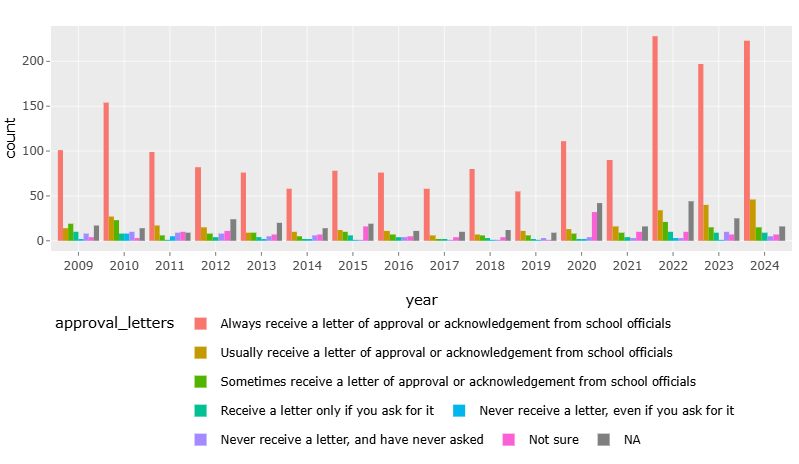

Annual Homeschooling Policy and Practice Survey Results
Every year, AHEM sends out a survey asking homeschoolers across the state about their town’s homeschooling policies and about their interactions with school officials.
We use this information in two ways. As we answer questions through our One-on-One Contacts program, we refer to the database to see the experiences of other homeschoolers in a given town. The responses also give us a snapshot of homeschooling policy and practice trends over time so we can see if there are broad changes that are occurring across the state.
Below are some of the results from this year's questionnaire.
Regarding face-to-face meetings
In the last year, 95.33% of respondents reported that school officials do not ask for face-to-face meetings. Of those asked to meet, 30.77% choose to comply. Usually declining a meeting is as simple as saying “No, thank you,” or even ignoring the request.
Hours and schedules
When it comes to days, hours, and schedules, most respondents are either asked to state that they meet or exceed the 900/990 hours required yearly in the public schools (45.10%) or aren’t asked for anything (33.01%).
If asked to supply a schedule, it often suffices either to simply ignore the request or to state instead that you will meet or exceed, or provide the equivalent of the 900/990 hours of instruction required in the public schools. In the last year, of those who chose not to accommodate detailed schedule requests, three had not received approval at the time of survey response.
Access to materials
In the last year, 84.96% of respondents reported providing a list or partial list of materials and/or resources to school officials.
Parental qualifications
In the last year, 39.87% of respondents reported summarizing their educational background while 55.23% say only that they are “of competent ability and good morals.”
Approval or acknowledgement letters
In the past year, most respondents reported that they always (73.11%) or usually (15.08%) receive an approval or acknowledgement letter.
Conclusions
Things continue to go pretty smoothly for homeschoolers in Massachusetts. Most report no difficulties in dealing with school officials. In cases where school officials ask for more than Charles allows, we see over and over again that homeschoolers who are aware of their rights and responsibilities simply submit what the law requires without negative consequences. Standing up for your rights in this way strengthens the ability of other homeschoolers to do the same, and lessens the likelihood that school officials’ demands will escalate.
This is an ongoing project: We hope you will help us build the database further. The more responses we get, the clearer the picture of homeschooling in Massachusetts becomes and the easier it is for us to pinpoint hotspots or identify trends. If you have not yet done so for this school year, please take a few minutes to fill out the questionnaire.
Questions? Contact AHEM.